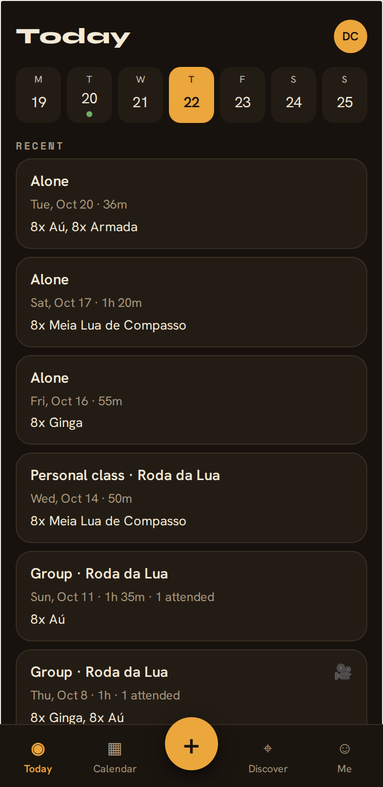
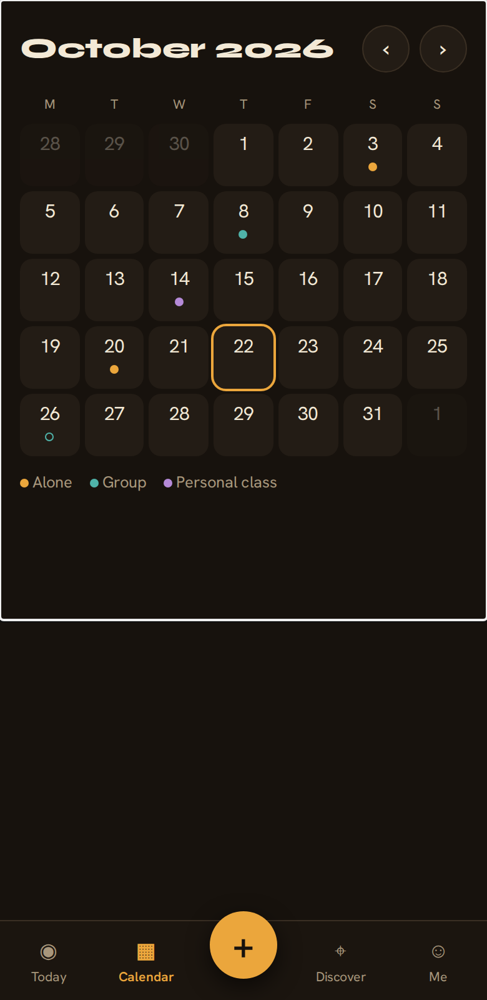
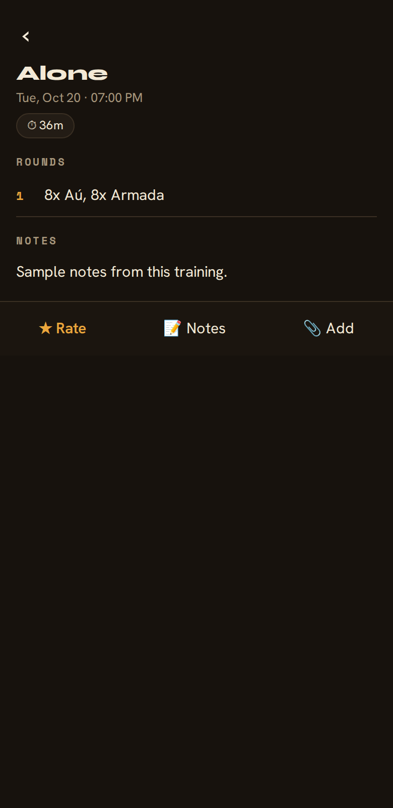
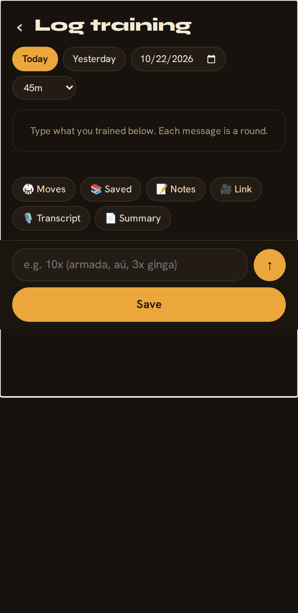
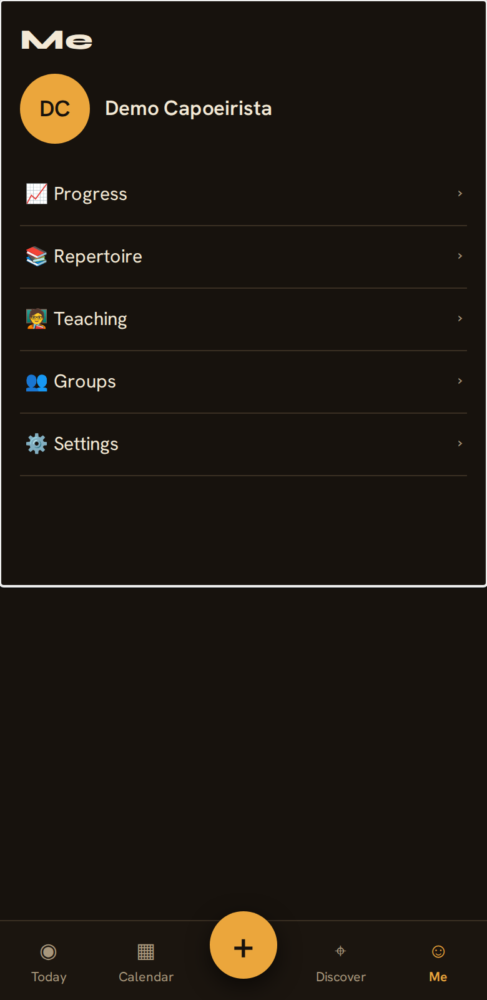

Real screenshots of the app as it ships today (demo data, iPhone-size screen, Oct 22 2026). These are the screens we designed together; compare with the approved mockups.

Today. Week strip, then recent trainings with resource icons. The "Now or next" card appears when a class is coming up this week.

Calendar. Full month with colored dots per kind; tap a day for its bottom sheet. White line = bug 2.

Training page. Date, time, and duration always shown; a video plays at the top when there is one (this demo training has none). Bar mid-screen = bug 1.

Log training. Date and duration chips, rounds as cards, the chat box where each message is a round. Chat box mid-screen = bug 1; white line = bug 2.

Me. The sections are listed, but Progress, Repertoire, Teaching, and Groups still open placeholders that link to the classic dashboard; Plan 2 builds them. No Train · Both · Teach slider yet (Plan 2). White line = bug 2.